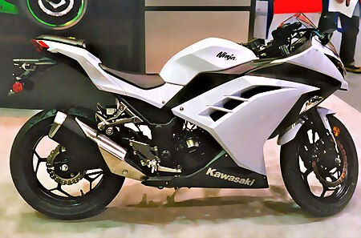
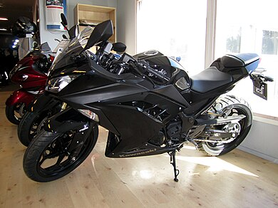
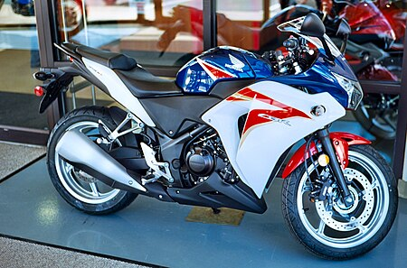
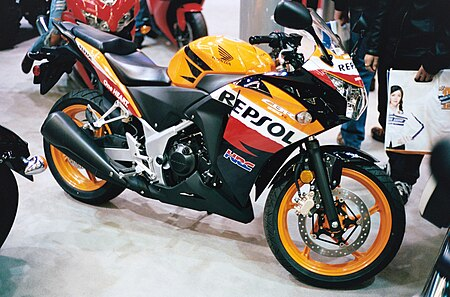
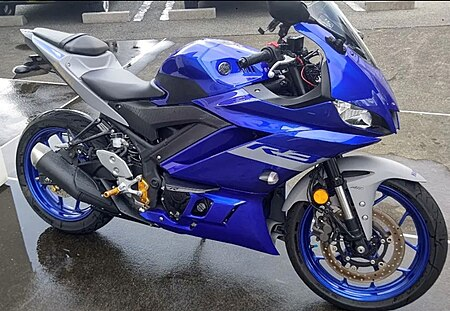
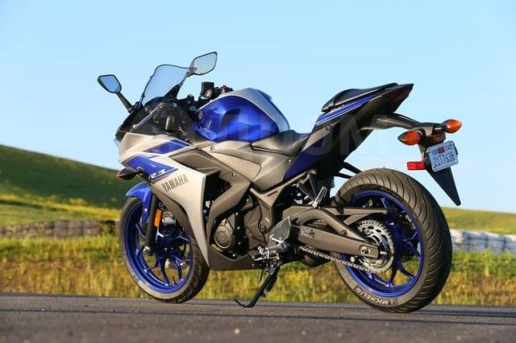

 
Kawasaki Ninja 300, или EX300, представляет собой спортивный мотоцикл серии Ninja объемом 296 куб. см (18,1 куб. дюйма), представленный Kawasaki в 2012 году для 2013 модельного года. Он продается в Азии, Австралии, Европе и Северной Америке. При выпуске Ninja 300R заменил Ninja 250R на некоторых рынках, а на других они продавались параллельно. Когда в 2018 году был выпущен Ninja 400, он заменил 300-ю модель на некоторых рынках.
Ninja 300 создан на базе Ninja 250R, лёгкого и недорогого спортивного мотоцикла, выпускаемого более трёх десятилетий. Как и Ninja 250R, он имеет полный обтекатель, но более широкую заднюю шину 140/70 вместо 130/70 у 250R. [12] У Ninja 300 также есть 5-спицевые колёса, индикатор нейтральной передачи и дополнительная антиблокировочная тормозная система (ABS). [13][14] По сравнению с 250R, у Ninja 300 также немного меньший топливный бак, более высокая передача и ограничивающее обратный крутящий момент многодисковое сцепление с вспомогательным механизмом, который уменьшает усилие на рычаге сцепления.Несмотря на то, что это спортивный мотоцикл, он обладает удобной эргономикой (например, ветровое стекло эффективно защищает от ветра), что способствует комфорту при поездках.
Ninja 300 имеет двухконтурный двигатель объемом 296 куб.см (18,1 кубических дюйма). [16] Испытания на динамометре показали, что Ninja 300 развивает большую мощность — 39,95 л. с. (29,79 кВт) — по сравнению с 250-й моделью, у которой 25,48 л. с. (19,00 кВт), а также более высокий крутящий момент в диапазоне оборотов от 18 до 13,57 фунт-фут (от 24,40 до 18,40 Н·м). [1][15] Его максимальная скорость была зафиксирована на уровне 180 км/ч (112 миль/ч), а ускорение — 5,6 секунды от 0 до 97 км/ч (от 0 до 60 миль/ч) и около 14,5 секунды от 141,14 до 145,77 км/ч (от 87,7 до 90,58 миль/ч) на дистанции в четверть мили. [1][2] Тормозной путь с 97 до 0 км/ч (с 60 до 0 миль/ч) для модели ABS составил от 38,0 до 41,1 м (от 124,6 до 135 футов). [1][2] Расход топлива у Ninja 300 составлял около 70 миль на галлон‑США (3,4 л/100 км; 84 мили на галлон‑имп), в то время как другие источники сообщали о 54,1 милях на галлон‑США (4,35 л/100 км; 65,0 миль на галлон‑имп), хотя независимо от методики измерения у 300-й модели расход топлива был выше, чем у Ninja 250R.
 
Honda CBR250R, CBR300R и CB300F представляют собой легкие одноцилиндровые мотоциклы рабочим объемом 249,5–286 куб.см (15,23–17,45 кубических дюйма), выпускаемыеHonda,, с 2011 года.
CBR250R во многом повторяет стиль VFR1200F, отличаясь Y-образной фарой и выступающим средним капотом, который создаёт многослойный вид. [10] Это новое направление в дизайне Honda дебютировало на Intermot в 2008 году с концепт-моделью V4[14] и CBR1000RR Fireblade 2008 года.
Серийная модель была представлена на Международной автомобильной выставке в Таиланде в 2010 году 27 ноября 2010 года, в Центральном районе Гонконга 28 ноября 2010 года [20] и на EICMA 2010. Глобальные модели CBR250R производились компанией Thai Honda Manufacturing в Таиланде, продажи начались в ноябре 2010 года, а весной 2011 года — в Японии. Модели для Индии и Южной Америки производились компанией Honda Motorcycle and Scooter India (HMSI) в Индии, начиная с весны 2011 года.
 
Yamaha R3 — это спортивный мотоцикл начального уровня, относящийся к тому же классу, что и другие мотоциклы объёмом 250–400 куб. см, такие как Kawasaki Ninja 300, Honda CBR300R и KTM серии 390. [9][6] Он имеет некоторое сходство с R25 по конструкции,например, двигателя. В двигателе используется система впрыска топлива с принудительной подачей воздуха, а литые алюминиевые диски с 10 спицами снижают неподрессоренную массу[по сравнению с?]. Цилиндры полностью алюминиевые. В 2017 году YZF-R3 предлагает дополнительную опцию ABS.Модель 2018 года оснащена двухканальной ABS и соответствует требованиям EURO IV. В 2025 году Yamaha R3 стала соответствовать стандарту EURO IV+. Мотоцикл также получил многодисковое сцепление и новую конструкцию фары, напоминающую Yamaha YZF-R7 и Yamaha YZF-R9 2025 года.
| Модель | Год выпуска | Мощность | Макс.скорость | Объем двигателя |
| Kawasaki Ninja 300 | 2012 | 40л.с/b> | 180км/ч | 296 куб.см |
| Honda CBR250R | 2011 | 37л.с/b> | 175км/ч | 286 куб.см/td> |
| YZF-R3 | 2015 | 43л.с/b> | 180км/ч | 321 куб.см |